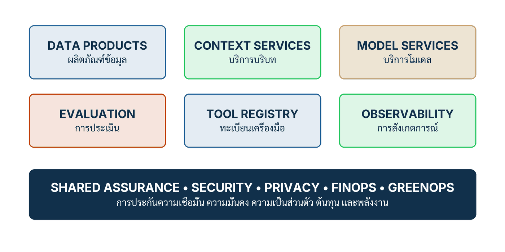

ในบทความนี้
- ผลผลิตของโรงงานไม่ใช่โมเดล — แล้วสิ่งที่มันผลิตจริง ๆ คืออะไร
- เริ่มจาก Demand ไม่ใช่จากการเก็บข้อมูล และบันได project → capability → operating model
- หกบริการที่ใช้ซ้ำได้ และแถบควบคุมร่วมที่พาดผ่านทั้งหก
- Context Engineering — บริบทเป็นองค์ประกอบของรุ่น ไม่ใช่ท่อที่มองไม่เห็น
- CX-REFUND-01 — กรณีเดียวที่ทั้งหกบริการต้องแตะ
- เวิร์กช็อปสองชั่วโมง และ Minimum production package เจ็ดรายการ
- ตัวชี้วัดสิบสองตัวพร้อมช่อง Scorecard และรูปแบบความล้มเหลวแปดแบบ
- ก้าวต่อไป — จากชิ้นส่วนที่ใช้ซ้ำได้ สู่คำถามว่าใครเป็นเจ้าของอะไร
In this post
- The factory's output is not a model — so what does it actually produce?
- Start from demand, not data collection, and the project → capability → operating model ladder
- Six reusable services, and the shared control band that spans all six
- Context Engineering — context is part of the release, not invisible plumbing
- CX-REFUND-01 — one case that every one of the six services has to touch
- A two-hour workshop, and the seven-item minimum production package
- Twelve metrics with a Scorecard column, and eight failure patterns
- The road ahead — from reusable components to the question of who owns what
🤔 ถ้า use case ที่สองแพงเท่า use case แรก องค์กรมีโรงงานหรือมีแค่โปรเจกต์?
ตอนที่แล้ว Redesign Tasks Before Headcount จบลงที่ข้อสรุปว่า เมื่อออกแบบงานระดับ task ใหม่แล้ว สิ่งที่ต้องตอบต่อคือชิ้นส่วนไหนควรถูกสร้างครั้งเดียวแล้วใช้ซ้ำทั้งองค์กร ไม่ใช่ให้ทุกทีมสร้างฐานเดิมซ้ำกันคนละรอบ ตอนนี้คือคำตอบของคำถามนั้น และเป็นบทที่ผมคิดว่าคนทำงานสายเทคโนโลยีกับสายธุรกิจอ่านแล้วมักเห็นภาพคนละภาพ — จึงเป็นบทที่ต้องอ่านด้วยกัน
คำตอบสั้น ๆ ของทั้งบทความคือ โรงงาน AI และข้อมูล (AI and data factory) ไม่ได้ผลิตโมเดล มันผลิตชิ้นส่วนที่ใช้ซ้ำได้ ได้แก่ ข้อมูลที่กำกับแล้ว บริบทที่มีเลขรุ่น ชุดประเมิน สัญญาการใช้ Tool, Release manifest, ขั้นตอนปฏิบัติงาน และ Feedback ที่ถูกแปลงเป็น Regression test — และมันเริ่มจาก Demand คือการตัดสินใจที่ต้องดีขึ้น ไม่ใช่เริ่มจากการไล่เก็บข้อมูลให้ครบก่อน
1. ผลผลิตของโรงงานไม่ใช่โมเดล
บทที่ 5 ของคู่มือเปิดด้วยนิยามเชิงปฏิเสธก่อน ซึ่งผมชอบวิธีเปิดแบบนี้มาก เพราะมันตัดความเข้าใจผิดสองข้อที่พบบ่อยที่สุดทิ้งไปตั้งแต่ประโยคแรก โรงงาน AI และข้อมูล[1] ไม่ใช่ ห้องที่เต็มไปด้วย Data Scientist และ ไม่ใช่ คิวของ Pilot ที่แยกขาดจากกัน สองภาพนี้คือสิ่งที่องค์กรจำนวนมากสร้างขึ้นมาจริง ๆ แล้วเรียกมันว่าโรงงาน ทั้งที่ภาพแรกคือศูนย์รวมทักษะ ส่วนภาพที่สองคือกองงานที่บังเอิญใช้เครื่องมือคล้ายกัน
นิยามเชิงบวกของหนังสือคือ โรงงานเป็นระบบการผลิตที่ทำซ้ำได้ สำหรับแปลงการตัดสินใจทางธุรกิจหนึ่งเรื่องให้กลายเป็น Data Product ที่กำกับได้ Workflow ที่มี AI เป็นส่วนประกอบ หลักฐานที่วัดได้ และบริการที่มีคนติดตามผลอยู่จริง คำสำคัญในนิยามนี้คือ "ทำซ้ำได้" — ไม่ใช่ "ทันสมัย" ไม่ใช่ "ใหญ่" และไม่ใช่ "มีโมเดลของตัวเอง"
แล้วสิ่งที่โรงงานผลิตออกมาจริง ๆ คืออะไร หนังสือระบุไว้ตรง ๆ ว่าผลผลิตของมันไม่ได้มีแค่โมเดล แต่รวมถึงสิ่งเหล่านี้ทั้งหมด[1]
- ข้อมูลต้นทางที่เชื่อถือได้ — ไม่ใช่ dump ของฐานข้อมูล แต่คือชุดข้อมูลที่มีคนรับผิดชอบและมีคำนิยามที่ตกลงกันแล้ว
- Retrieval corpora — คลังความรู้ที่ตั้งใจคัดมาเพื่อค้นคืน ไม่ใช่ทุกไฟล์ในองค์กรที่เทลงฐานข้อมูลเวกเตอร์
- Context template — แม่แบบบริบทที่ประกอบคำสั่ง หลักฐาน และสถานะเข้าด้วยกันอย่างมีแบบแผน
- Tool contract — สัญญาการใช้เครื่องมือ ระบุขอบเขต Schema และผลที่มันก่อได้
- ชุดประเมิน (evaluation set) — กรณีทดสอบที่ติดป้ายคำตอบไว้แล้ว ใช้ตัดสินว่ารุ่นใหม่ดีขึ้นหรือแย่ลง
- Release manifest — เอกสารที่ผูกทุกชิ้นส่วนของรุ่นหนึ่งไว้ด้วยกัน
- ขั้นตอนปฏิบัติงาน — สิ่งที่คนหน้างานต้องทำเมื่อระบบเสนอผิด หรือเมื่อระบบไม่ตอบ
- Feedback ที่ถูกแปลงเป็น Regression test — คำแก้ของลูกค้าและผู้ตรวจที่กลายเป็นข้อสอบถาวรของระบบ
อ่านรายการนี้ช้า ๆ แล้วจะเห็นว่าแทบไม่มีรายการไหนเลยที่เป็น "โมเดล" ในความหมายที่คนทั่วไปเข้าใจ ทุกรายการคือสิ่งที่อยู่รอบโมเดล และเป็นสิ่งที่ทำให้โมเดลตัวเดิมทำงานได้ต่างกันโดยสิ้นเชิงในสององค์กร นี่คือเหตุผลที่การเปรียบเทียบองค์กรด้วยคำถามว่า "ใช้โมเดลตัวไหน" แทบไม่ให้ข้อมูลอะไรเลย คำถามที่ให้ข้อมูลคือ "ชิ้นส่วนในรายการข้างบนขององค์กรคุณ มีเจ้าของกี่รายการ และมีเลขรุ่นกี่รายการ"
โปรเจกต์กับโรงงาน ต่างกันตรงไหน
วิดีโอต้นทางของซีรีส์นี้อธิบายความต่างไว้ชัดในช่วง §10 (25:53–28:24)[2] ว่ารูปแบบที่องค์กรทั่วไปทำกันคือทำ AI แบบโครงการ มีปัญหาหนึ่งเรื่อง ตั้งทีมหนึ่งทีม เก็บข้อมูล สร้างโมเดล ทดลอง แล้วจบ ปัญหาไม่ได้อยู่ที่ว่าทำแบบนี้แล้วไม่ได้ผล — โครงการหลายอันได้ผลจริง ปัญหาอยู่ที่ว่าเมื่อโครงการจบ สิ่งที่เหลืออยู่กับองค์กรมีน้อยมาก และโครงการถัดไปต้องเริ่มจากศูนย์อีกครั้ง วิดีโอสรุปหลักการไว้ประโยคเดียวว่าการใช้ซ้ำทำให้ต้นทุนส่วนเพิ่มของ use case ถัดไปลดลง
| Dimension | ทำแบบโปรเจกต์ | ทำแบบโรงงาน |
|---|---|---|
| จุดเริ่ม | มีปัญหาหนึ่งเรื่อง หรือมีข้อมูลชุดหนึ่งอยู่แล้วจึงหาว่าจะใช้ทำอะไร | มีการตัดสินใจที่ต้องดีขึ้น พร้อมเจ้าของและผลลัพธ์ที่วัดได้ |
| สิ่งที่ส่งมอบ | โมเดลหรือเดโม พร้อมสไลด์สรุปผล | Data product, บริบทที่มีเลขรุ่น ชุดประเมิน Tool contract และ Manifest |
| สิ่งที่เหลืออยู่เมื่อทีมสลาย | ความรู้ในหัวคน และ repo ที่ไม่มีใครดูแลต่อ | ชิ้นส่วนที่มีเจ้าของ มีเลขรุ่น และมีคนใช้ต่อได้ทันที |
| ต้นทุนของ use case ถัดไป | ใกล้เคียงของเดิม เพราะสร้างฐานเดิมใหม่ทุกครั้ง | ลดลงตามสัดส่วนชิ้นส่วนที่ใช้ซ้ำได้ — หนังสือและวิดีโอไม่ได้ระบุว่าลดเท่าไร |
| หลักฐาน | ผลทดสอบครั้งเดียวตอนปิดโครงการ | หลักฐานที่เดินทางไปพร้อมผลิตภัณฑ์และถูกรันซ้ำทุกรุ่น |
| การเรียนรู้ | อยู่ในรายงานสรุปบทเรียนที่ไม่มีใครเปิดอ่านอีก | Feedback ถูกตรวจแล้วกลายเป็น Regression test ที่บังคับใช้จริง |
ตารางนี้เป็นการอ่านของผมจากเนื้อหาในบท ไม่ใช่ตารางที่พิมพ์อยู่ในหนังสือ แต่แถวสุดท้ายคือแถวที่ผมใช้ตรวจองค์กรจริงบ่อยที่สุด เพราะมันตอบได้ด้วยคำถามเดียว: เมื่อสามเดือนก่อนมีเคสที่ระบบตอบผิดจนต้องขอโทษลูกค้า วันนี้เคสนั้นอยู่ในชุดทดสอบที่รันทุกครั้งก่อนปล่อยรุ่นใหม่หรือยัง ถ้าคำตอบคือ "อยู่ในอีเมลของหัวหน้าทีม" องค์กรนั้นยังทำงานแบบโครงการอยู่ ไม่ว่าจะมีแพลตฟอร์มดีแค่ไหน
2. โรงงานเริ่มจาก Demand ไม่ใช่จากการเก็บข้อมูล
ประโยคที่ผมคิดว่าแพงที่สุดในบทนี้สั้นมาก: โรงงานเริ่มจาก Demand[1] ให้ระบุการตัดสินใจที่ต้องการปรับปรุง ใครคือผู้รับผิดชอบการตัดสินใจนั้น AI มีอำนาจเพียงใดในกระบวนการ และวัดผลอย่างไร — ทั้งสี่ข้อนี้ต้องเสร็จก่อนไปเก็บข้อมูลเพิ่ม
ทำไมลำดับนี้ถึงสำคัญ เพราะลำดับที่กลับกันคือรูปแบบความล้มเหลวข้อแรกที่บทนี้ระบุไว้ตรง ๆ นั่นคือการสร้าง Data Lake โดยไม่รู้ว่าจะปรับการตัดสินใจใด ผมเจอรูปแบบนี้บ่อยจนแทบทำนายได้ล่วงหน้า: องค์กรลงทุนกับ platform ข้อมูลอยู่หลายปี จบด้วยคลังที่ครบถ้วนมาก แล้วเพิ่งมาถามว่า "ทีนี้จะเอาไปทำอะไรดี" คำตอบที่ได้มักเป็นรายการ use case ที่ไม่มีใครเป็นเจ้าของ เพราะคนที่เป็นเจ้าของการตัดสินใจจริง ๆ ไม่เคยอยู่ในห้องตอนออกแบบคลังนั้น
คำว่า "AI มีอำนาจเพียงใด" ในที่นี้คือ อำนาจตัดสินใจ (decision authority) ซึ่งซีรีส์นี้แยกไว้เป็นมิติอิสระตั้งแต่ตอน #5 Decision Portfolio — ระบบที่แค่ร่างคำตอบให้คนตรวจ กับระบบที่ปล่อยผลจริงได้เอง เป็นคนละงานที่ต้องการชิ้นส่วนจากโรงงานคนละชุด แม้จะเป็นการตัดสินใจเรื่องเดียวกันก็ตาม เช่นเดียวกับ ระดับผลกระทบ (consequence) ซึ่งจะกลับมาอีกครั้งในรูปของตัวชี้วัด "evaluation coverage by consequence" ในหัวข้อที่ 7
เมื่อรู้ว่าจะปรับการตัดสินใจใดแล้ว ขั้นถัดไปตามหนังสือคือหล่อข้อมูลสำคัญให้เป็นผลิตภัณฑ์ที่ Domain เป็นเจ้าของ พร้อมคำนิยาม ที่มาของข้อมูลและผลลัพธ์ (provenance) เกณฑ์คุณภาพ กฎการเข้าถึง และคำมั่นเรื่องระดับบริการ สังเกตว่าห้าอย่างนี้ไม่ใช่งานวิศวกรรมข้อมูลล้วน ๆ — "คำนิยาม" กับ "เกณฑ์คุณภาพ" เป็นการตัดสินใจทางธุรกิจที่ทีมข้อมูลตัดสินแทนไม่ได้
บันไดสามขั้น: project → capability → operating model
วิดีโอต้นทางแยกไว้สามระดับในช่วง §13 (34:04–37:18) และหนังสือนำมาเรียบเรียงต่อ[2] ความสำคัญของบันไดนี้ไม่ได้อยู่ที่การจัดอันดับองค์กร แต่อยู่ที่การอธิบายว่าทำไมการนับจำนวน use case ถึงเป็นตัวชี้วัดที่หลอกตัวเองได้ง่ายที่สุด วิดีโอใช้ภาพเปรียบเทียบว่าองค์กรที่มี Pilot จำนวนมากแต่แยกกันอยู่ อาจอยู่ห่างจากการเปลี่ยนผ่านมากกว่าองค์กรที่มีการใช้งานไม่กี่รายการแต่ใช้แพลตฟอร์ม วงจร Feedback และเส้นทางขยายร่วมกัน — นี่คือภาพเปรียบเทียบเชิงวาทศิลป์ ไม่ใช่ผลการวัด และไม่ควรถูกยกไปวางในตารางตัวชี้วัดใด ๆ
| Level | สิ่งที่มันพิสูจน์หรือเพิ่มเข้ามา | คำถามที่ตอบได้แล้ว | สิ่งที่ยังตอบไม่ได้ |
|---|---|---|---|
| AI project | พิสูจน์ว่าปัญหาหนึ่งเรื่องแก้ได้ด้วยวิธีนี้ | เทคนิคนี้ทำงานกับข้อมูลของเราได้ไหม | ทำซ้ำกับเรื่องที่สองด้วยแรงที่น้อยลงได้หรือไม่ |
| AI capability | เพิ่มข้อมูลที่ใช้ซ้ำได้ การจัดการโมเดล governance ความเชี่ยวชาญ และความสามารถในการทดลอง | เรื่องที่สองเริ่มจากฐานที่มีอยู่แล้วได้ไหม | การตัดสินใจประจำวันขององค์กรเปลี่ยนไปแล้วหรือยัง |
| AI operating model | ทำให้ความสามารถเหล่านั้นเป็นส่วนหนึ่งของวิธีออกแบบ decision และ workflow | เราออกแบบงานใหม่โดยถือว่ามีความสามารถนี้อยู่แล้วหรือไม่ | ใครเป็นเจ้าของอะไรเมื่อขยายข้าม domain — คำถามของตอนถัดไป |
พลังสามด้านที่ไม่ได้มาฟรี
อีกกรอบหนึ่งที่หนังสือหยิบมาจากวิดีโอช่วง §11 (28:24–31:13) คือพลังสามด้านของ รูปแบบการดำเนินงาน (operating model) แบบดิจิทัล[2] ได้แก่ Scale คือรองรับลูกค้า ธุรกรรม หรือการตัดสินใจได้มากขึ้นโดยทรัพยากรไม่โตตามสัดส่วน Scope คือนำข้อมูลและความสามารถ AI ไปใช้ซ้ำข้ามผลิตภัณฑ์ บริการ และบริบท และ Learning คือเปลี่ยน interaction ให้กลายเป็นความเข้าใจที่ดีขึ้นและผลการทำงานที่ดีขึ้นในอนาคต
ประโยคที่ต้องอ่านคู่กันเสมอคือ พลังทั้งสามนี้ไม่ใช่คุณสมบัติที่เกิดขึ้นเองจากโมเดล มันเป็นผลของการออกแบบองค์กร ผมเน้นประโยคนี้เพราะมันคือเหตุผลที่บทนี้มีอยู่ทั้งบท ถ้าพลังสามด้านมาพร้อมโมเดล การซื้อ API ก็เพียงพอแล้ว และคงไม่มีใครต้องสร้างโรงงาน วงจรเศรษฐศาสตร์ที่หนังสือเขียนไว้คือ use → evidence → learning → ผลิตภัณฑ์หรือกระบวนการที่ดีขึ้น → การใช้งานที่มีค่ามากขึ้น โดยวัดคุณภาพและความเสียหายในทุกขั้น ซึ่งก็คือ วงจรการเรียนรู้ (learning loop) ที่ตอน #3 The Learning Engine เจาะไว้แล้ว โรงงานคือรูปธรรมทางวิศวกรรมของวงจรนั้น
3. หกบริการที่ใช้ซ้ำได้ และแถบควบคุมร่วม
นี่คือหัวใจของบท และเป็นภาพที่ผมแนะนำให้ผู้บริหารจำไว้ภาพเดียวจากตอนนี้ ความสามารถของโรงงานประกอบด้วยบริการที่ใช้ซ้ำได้หกด้าน ได้แก่ Data products, Context services, Model services, Evaluation services, Tool registry services และ Observability services โดยมีการควบคุมร่วมสี่ด้าน คือ Security, Privacy, FinOps และ Sustainability พาดผ่านทั้งหกบริการ[1]
{kind=link}

สิ่งที่ทำให้การแบ่งหกช่องนี้มีประโยชน์ ไม่ใช่ตัวเลขหก แต่คือสิ่งที่แต่ละช่องเป็นเจ้าของและกำหนดรุ่น ผมจึงจัดตารางด้านล่างด้วยสามคำถาม: บริการนี้เป็นเจ้าของอะไร ใครคือผู้ใช้ และมันปล่อยหลักฐานอะไรออกมาให้คนอื่นตรวจได้ ถ้าช่องใดตอบไม่ได้ครบสามคำถาม ช่องนั้นยังเป็นทีม ไม่ใช่บริการ
| Service | สิ่งที่เป็นเจ้าของและกำหนดรุ่น | ผู้ใช้บริการ | หลักฐานที่ปล่อยออกมา |
|---|---|---|---|
| Data products ผลิตภัณฑ์ข้อมูล |
ข้อเท็จจริงที่กำกับแล้ว พร้อมคำนิยาม ที่มาของข้อมูล เกณฑ์คุณภาพ กฎการเข้าถึง และคำมั่นระดับบริการ | ทุก Workflow, Context services และการประเมินระบบ | Data contract, Lineage, ค่าความสดของข้อมูล และบันทึกการละเมิดสัญญาข้อมูล |
| Context services บริการบริบท |
การประกอบคำสั่ง หลักฐานที่ค้นคืนมา และ Memory เข้าเป็นบริบทหนึ่งชุด | ทุก Candidate ที่ใช้โมเดลตอบงานจริง | Context manifest, รหัส Corpus snapshot, เลขรุ่นของ Ranking และ Template |
| Model services บริการโมเดล |
การส่งงานไปยังโมเดลขนาดเหมาะสมที่สุดที่ยังทำงานได้ และการจัดการเมื่อ Provider เปลี่ยน | ทีมที่ดูแล Workflow แต่ละสาย | เลขรุ่นของนโยบายการส่งงาน บันทึกการเปลี่ยน Provider และต้นทุนกับ Latency ต่อภารกิจ |
| Evaluation services การประเมินระบบ |
กรณีที่ติดป้ายคำตอบไว้แล้ว การสอบเทียบ Judge และการรันชุดทดสอบ | ด่านอนุมัติการนำระบบออกใช้ และผู้อนุมัติรุ่น | เลขรุ่นของ Golden set, ความครอบคลุมตามระดับผลกระทบ ผลรันพร้อมข้อจำกัดที่พบ |
| Tool registry services ทะเบียนเครื่องมือ |
ขอบเขต Schema ประเภทของผลที่เครื่องมือก่อได้ และเงื่อนไขการอนุมัติ | Guard ภายนอก และ Runtime ที่เรียกเครื่องมือ | Tool contract, Effect class, กฎการอนุมัติ และประวัติการเปลี่ยนแปลง |
| Observability services ความสามารถในการสังเกตระบบ |
Trace, ผลลัพธ์ที่เกิดขึ้นจริง ต้นทุน การเลื่อนไหลของพฤติกรรม และเหตุการณ์ผิดปกติ | ฝ่ายปฏิบัติการ ฝ่ายความเสี่ยง และคณะกรรมการ | Trace ที่ย้อนกลับได้ บันทึกผลลัพธ์ สัญญาณ Drift และไทม์ไลน์ของ Incident |
ที่มาของข้อมูลและผลลัพธ์ มีคำศัพท์กลางให้ใช้แล้ว
ในตารางข้างบน คำว่า provenance โผล่สองที่ คือที่ Data products และที่ Observability ซึ่งไม่ใช่เรื่องบังเอิญ — ที่มาของข้อมูลและผลลัพธ์เป็นสิ่งที่ต้องถูกบันทึกตั้งแต่ต้นทาง และต้องอ่านย้อนได้ที่ปลายทาง ข่าวดีคือเรื่องนี้ไม่ต้องประดิษฐ์คำศัพท์เอง W3C PROV-O เป็น W3C Recommendation เผยแพร่เมื่อ 30 เมษายน 2013 และ ณ วันที่ 5 กันยายน 2026 ยังคงสถานะเดิม ไม่มีเอกสารใดมาแทนที่[3] มันให้ชุดคลาสและคุณสมบัติสำหรับแทนและแลกเปลี่ยนข้อมูล provenance ที่เกิดจากคนละระบบและคนละบริบท ด้วยแกนหลักคือ entity, activity, agent และความสัมพันธ์แบบการอนุพัทธ์
สิ่งที่ PROV-O ไม่ได้ ให้ และต้องพูดให้ชัดคือ มันเป็นคำศัพท์ ไม่ใช่นโยบายการตรวจสอบ ไม่ใช่แบบการจัดเก็บ และไม่ได้บอกว่าองค์กรต้องเก็บอะไรนานเท่าไร คำถามเหล่านั้นเป็นของนโยบายภายในและของกฎหมายที่ใช้บังคับ ประโยชน์จริงของการยึดคำศัพท์กลางคือ เมื่อ Data product กับ Observability พูดภาษาเดียวกัน ตัวชี้วัด "provenance coverage" ในหัวข้อที่ 7 จึงนับได้จริงแทนที่จะเป็นความรู้สึก
แถบควบคุมร่วมสี่ด้าน
แถบสีเข้มใต้ทั้งหกช่องในรูปคือสิ่งที่ผมเห็นองค์กรพลาดบ่อยที่สุด เพราะมันเป็นสิ่งที่ "ทุกคนรับผิดชอบ" จึงมักแปลว่าไม่มีใครรับผิดชอบ หนังสือระบุการควบคุมร่วมสี่ด้าน คือ Security, Privacy, FinOps และ Sustainability[1] พาดผ่านทั้งหกบริการ ไม่ใช่ตั้งเป็นด่านตรวจตอนท้าย
Security — สิ่งที่ผมอยากให้จำคือ ความปลอดภัยของระบบ AI ไม่ได้เริ่มตอนขึ้น production เอกสาร NIST SP 800-218A ซึ่งเป็น SSDF Community Profile สำหรับ Generative AI และ dual-use foundation models เผยแพร่เมื่อ 26 กรกฎาคม 2024 และ ณ 5 กันยายน 2026 ยังคงสถานะ Final ไม่มีฉบับปรับปรุงมาแทน[4] จุดที่เกี่ยวกับโรงงานโดยตรงคือ มันเขียนไว้ว่ากลุ่มผู้ใช้เอกสารนี้รวมถึงผู้จัดหาระบบ AI ไม่ใช่แค่ผู้พัฒนา แปลว่าการซื้อโมเดลหรือบริการจากภายนอกไม่ได้ทำให้เรื่องนี้หายไป มันย้ายไปอยู่ในสัญญาและในหลักฐานที่เราต้องเรียกจาก Supplier แทน — และตามที่หนังสือกำกับไว้ Profile ด้านความปลอดภัยช่วยลดความเสี่ยง แต่ไม่รับประกันพฤติกรรมที่ปลอดภัยตอนใช้งานจริง
Privacy — ในบทนี้ความเป็นส่วนตัวถูกระบุในฐานะตระกูลการควบคุมที่ต้องพาดผ่านทุกบริการ ไม่ใช่ในฐานะข้อกฎหมาย ผมจึงจะไม่ตีความ PDPA ในตอนนี้ เรื่องนั้นเป็นของตอนที่ว่าด้วย governance โดยเฉพาะ สิ่งที่ต้องตัดสินในระดับโรงงานคือ ข้อมูลอะไรเข้าไปอยู่ใน Corpus ได้บ้าง Context services เก็บ Memory อะไรไว้บ้างและนานเท่าไร และ Trace ที่ Observability เก็บมีข้อมูลส่วนบุคคลปนอยู่หรือไม่
FinOps — FinOps Foundation จัด FinOps for AI ไว้เป็นหมวดเทคโนโลยีหนึ่งของ FinOps Framework และหน้า FinOps for AI Overview ปรับปรุงล่าสุดเมื่อ 17 กุมภาพันธ์ 2026[5] สิ่งที่แถบนี้ทำในทางปฏิบัติคือ allocation ระบุให้ได้ว่าใครคือผู้บริโภคผลลัพธ์ของโมเดล forecasting ซึ่ง FinOps Foundation เองระบุว่าคาดการณ์ได้ยากกว่าคลาวด์ทั่วไปและต้องอาศัยประสบการณ์มากกว่า optimization และ unit economics ที่เพิ่มหน่วยฐาน token เข้ามา เช่น ต้นทุนต่อการเรียกใช้หนึ่งครั้งหรือต่อผลลัพธ์ที่สำเร็จหนึ่งชิ้น รวมถึงการกำกับด้วย Quota, Reserved capacity และ Throttle ตัวเลขราคาและพลังงานจริง ๆ เป็นเรื่องของตอน #17 Suppliers, Cost and Footprint ตอนนี้ผมพูดเฉพาะว่าแถบนี้ทำอะไร
Sustainability — คำที่หนังสือใช้คือ sustainability หรือ AI ที่ยั่งยืน ไม่ใช่คำว่า GreenOps ป้าย GREENOPS ที่ปรากฏบนแถบสีเข้มในภาพประกอบเป็นคำย่อของซีรีส์นี้เอง ใช้เพื่อให้ป้ายบนภาพสั้นพอ ไม่ใช่ถ้อยคำของหนังสือ ผมกำกับไว้ตรงนี้เพราะซีรีส์นี้มีข้อตกลงว่าจะไม่ยัดคำที่ต้นทางไม่ได้ใช้เข้าไปในปากต้นทาง
เจ้าของและการปรับปรุงต่อเนื่อง เป็นกระบวนการ ไม่ใช่ checklist ครั้งเดียว
คำถามที่ตามมาทันทีจากตารางหกบริการคือ ใครดูแลว่าบริการเหล่านี้ยังทำงานได้ดีอยู่ในปีที่สอง คำตอบเชิงโครงสร้างมีมาตรฐานสากลรองรับอยู่แล้ว ISO/IEC 42001:2023 ว่าด้วย ระบบการจัดการ AI (AI management system) ฉบับที่ 1 ลงวันที่ธันวาคม 2023 และ ณ 5 กันยายน 2026 มีสถานะ Published ที่ขั้น 60.60 โดยไม่มีการแก้ไข ภาคผนวก หรือฉบับใหม่ประกาศไว้ในหน้าแคตตาล็อกของ ISO[6] คำอธิบายสาธารณะของมาตรฐานระบุว่าเป็นข้อกำหนดสำหรับการจัดตั้ง นำไปใช้ คงไว้ และปรับปรุงระบบการจัดการ AI อย่างต่อเนื่องภายในองค์กร
และต้องเน้นด้วยว่าเอกสารทั้งสี่ฉบับนี้ทำคนละหน้าที่กัน ห้ามใช้แทนกัน: PROV-O ให้คำศัพท์สำหรับที่มาของข้อมูล ISO/IEC 42001 ให้กระบวนการจัดการตลอดวงจรชีวิต NIST SP 800-218A ให้แนวปฏิบัติการพัฒนาที่ปลอดภัยและแนวปฏิบัติฝั่งผู้จัดหา ส่วน FinOps for AI บอกว่าแถบต้นทุนทำอะไรในทางปฏิบัติ องค์กรที่หยิบมาแค่ฉบับเดียวแล้วบอกว่าครอบคลุมแล้ว กำลังปิดช่องหนึ่งและเปิดอีกสามช่องทิ้งไว้
4. Context Engineering — บริบทเป็นองค์ประกอบของรุ่น
ถ้าให้ผมเลือกย่อหน้าเดียวจากบทที่ 5 ที่คิดว่าเปลี่ยนวิธีทำงานของทีมวิศวกรรมได้มากที่สุด ผมเลือกย่อหน้านี้ หนังสือเขียนไว้ในหน้า 23 ว่า[1]
สำหรับ Generative AI งานต้องขยายถึง Context Engineering เพราะข้อความที่ค้นคืน คำสั่ง สถานะเซสชัน ความหมายของเครื่องมือ และ Threshold นโยบายล้วนร่วมกำหนดพฤติกรรม จึงต้องอยู่ในกระบวนการปล่อยรุ่น
ประโยคภาษาอังกฤษของฉบับเดียวกันจบด้วยวลีที่คมกว่า คือสิ่งเหล่านี้ "belong to the release process rather than invisible plumbing" — เป็นขององค์ประกอบของรุ่น ไม่ใช่ท่อที่มองไม่เห็น ผมชอบคำว่า invisible plumbing เพราะมันอธิบายสภาพจริงในองค์กรส่วนใหญ่ได้ตรงเผง: Prompt อยู่ในไฟล์ที่ไม่มีใครรีวิว Corpus ถูกอัปเดตโดยคนที่หวังดี Threshold ถูกแก้ในหน้าคอนฟิกตอนตีสอง และไม่มีรายการใดในสามอย่างนี้ปรากฏในบันทึกการปล่อยรุ่น
ห้าอย่างที่ต้องอยู่ในกระบวนการปล่อยรุ่นตามประโยคนี้ มีชื่อชัดเจน และผมแนะนำให้ทีมพิมพ์ห้าบรรทัดนี้แปะไว้ข้างจอ
- ข้อความที่ค้นคืน (retrieved passages) — Corpus snapshot ไหน วันมีผลเมื่อไร รหัสข้อความอะไร
- คำสั่ง (instructions) — System prompt และ Template ทุกชั้นที่ประกอบขึ้นเป็นคำสั่งจริง
- สถานะเซสชัน (session state) — สิ่งที่ระบบจำข้ามเทิร์นและข้ามช่องทาง
- ความหมายของเครื่องมือ (tool semantics) — เครื่องมือชื่อนี้ทำอะไรจริง ๆ และคำอธิบายที่โมเดลเห็นตรงกับพฤติกรรมจริงหรือไม่
- Threshold นโยบาย (policy thresholds) — เส้นแบ่งที่ทำให้ระบบส่งต่อให้คน หรือหยุด
ห้าอย่างนี้เปลี่ยนพฤติกรรมของระบบได้มากพอ ๆ กับการเปลี่ยนโมเดล แต่ในองค์กรส่วนใหญ่ การเปลี่ยนโมเดลต้องผ่านการอนุมัติหลายชั้น ส่วนการแก้ Prompt ทำได้ด้วยการ commit เดียว นี่คือความไม่สมมาตรที่บทนี้พยายามปิด
💡 มุมมองของผม: หลักปฏิบัติข้อที่ 3 ของบทนี้เขียนสั้นแต่มีผลบังคับสูงที่สุด — "ถือบริบทเป็นองค์ประกอบของรุ่น กำหนดรุ่นของ Prompt, Template, Corpus, Ranking, Memory และ Tool ร่วมกัน"[1] คำที่ผมอยากให้อ่านช้า ๆ คือ "ร่วมกัน" ทีมจำนวนมากกำหนดเลขรุ่นให้ Prompt แล้ว แต่ Corpus อัปเดตแยก Ranking config อัปเดตแยก และ Memory ไม่มีเลขรุ่นเลย ผลคือเมื่อระบบเริ่มตอบแปลกไปหลังปล่อยรุ่นไปสักพัก ไม่มีใครย้อนได้ว่าอะไรเปลี่ยน เพราะไม่มีจุดใดที่บันทึกสภาพทั้งชุดไว้พร้อมกัน
หลักปฏิบัติอีกสี่ข้อที่เหลือของบทนี้[1] คือ ข้อ 1 เริ่มจากการตัดสินใจ ระบุ Outcome ผู้ใช้ อำนาจ และผลกระทบก่อนสร้าง Pipeline ซึ่งเป็นสิ่งที่หัวข้อที่ 2 ทั้งหัวข้อขยายไว้แล้ว ข้อ 2 บริหารข้อมูลเป็นผลิตภัณฑ์ ข้อมูลสำคัญต้องมีเจ้าของ Semantic contract, Lineage, Access และ Lifecycle ข้อ 4 ส่งหลักฐานไปพร้อมผลิตภัณฑ์ รุ่นที่ไม่มีผลทดสอบ ข้อจำกัด และ Rollback ยังไม่พร้อม และข้อ 5 เปลี่ยน Feedback เป็นการเรียนรู้ที่กำกับได้ ตรวจคำแก้ สร้างกรณีข้างเคียง แล้วผ่าน Gate ใหม่
ข้อ 4 มีคำที่ควรอ่านซ้ำคือคำว่า "ยังไม่พร้อม" — ไม่ใช่ "ควรปรับปรุง" หนังสือเลือกใช้คำที่แปลว่า incomplete คือยังไม่ครบองค์ประกอบ ซึ่งเป็นคนละสถานะกับ "ผ่านแบบมีข้อสังเกต" ในทางปฏิบัติ นี่คือความต่างระหว่างองค์กรที่มี ด่านอนุมัติการนำระบบออกใช้ (release gate) จริง กับองค์กรที่มีแค่การประชุมก่อนปล่อยรุ่น
คำถามที่หลายคนถามต่อทันทีคือ แล้วต้องบันทึกบริบทเป็นเอกสารรูปแบบไหน คำตอบคือ บัญชีรายการบริบทขณะทำงาน (runtime-context manifest) ซึ่งเป็นเครื่องมือที่ตอน #11 When Is AI the Core? เป็นเจ้าของและจะลงรายละเอียดทีละช่อง ในตอนนี้ผมขอหยุดไว้แค่หลักการว่า ถ้าห้าอย่างข้างบนไม่ได้ถูกผูกไว้ในเอกสารเดียวที่มีเลขรุ่น เราจะไม่มีทางตอบคำถาม "รุ่นที่ตอบผิดเมื่อวานคือรุ่นไหน" ได้เลย
5. CX-REFUND-01 — กรณีเดียวที่ทั้งหกบริการต้องแตะ
ตั้งแต่หัวข้อนี้ไปจนจบซีรีส์ในส่วนวิศวกรรม หนังสือใช้กรณีเดียวกันตลอดเพื่อให้เปรียบเทียบข้ามบทได้ ชื่อของมันคือ CX-REFUND-01 ผู้ช่วยคืนเงินลูกค้าของบริษัท Luma Commerce Thailand (กรณีสมมติจากหนังสือ)[1] — บริษัทนี้ไม่มีอยู่จริง และตัวเลขทุกตัวในกรณีนี้เป็นค่าตัวอย่าง ไม่ใช่ Threshold สากลที่ใครควรลอกไปใช้
ขอบเขตงานของมันคือ ตอบคำถามนโยบายคืนเงิน คัดแยกเคส ร่างคำตอบ เสนอการคืนเงิน และสร้าง CRM note โดยรองรับคำถามสองภาษา เครื่องมือทางการเงินตัวเดียวที่มันเสนอได้คือ issue_refund และ Guard ภายนอกจะดำเนินการคืนเงินได้เพียงหนึ่งรายการที่เข้าเกณฑ์ วงเงินไม่เกิน 2,000 บาท และต้องผ่านการยืนยันก่อน ส่วนการเงินอื่นทั้งหมดต้องไปที่คน
สิ่งที่ผมคิดว่าออกแบบได้ดีที่สุดในกรณีนี้ไม่ใช่ตัวความสามารถ แต่คือรายการยกเว้น ขอบเขตของมันตัดออกอย่างชัดเจนหกอย่าง ได้แก่ เคสที่มีสัญญาณทุจริต สินค้าแบบสมัครสมาชิก คำสั่งซื้อจากมาร์เก็ตเพลส ข้อร้องเรียนทางกฎหมาย การชำระเงินที่ไม่ใช่สกุลบาท และยอดเกิน 2,000 บาท[1] การเขียนรายการยกเว้นให้ชัดตั้งแต่ต้นเป็นสิ่งที่แยกระบบที่ออกแบบมาแล้ว ออกจากระบบที่แค่ "ลองดูก่อนว่าตอบได้แค่ไหน"
โรงงานหกบริการแตะกรณีนี้อย่างไร
ประโยชน์ของการมีกรณีร่วมคือ มันบังคับให้ทั้งหกช่องต้องส่งของจริงออกมา ไม่ใช่แค่มีอยู่บนแผนผัง ตารางด้านล่างคือสิ่งที่แต่ละบริการต้องส่งให้ CX-REFUND-01 ตามที่หนังสือเล่าไว้ในหน้า 23
| Service | สิ่งที่ต้องส่งให้ CX-REFUND-01 | สิ่งที่ห้ามทำ |
|---|---|---|
| Data products | ข้อมูลคำสั่งซื้อและการชำระเงินยังคงเป็นบันทึกที่มีสภาพเป็นหลักฐาน เข้าถึงผ่านบริการที่จำกัดขอบเขตเท่านั้น | ไม่คัดลอกข้อมูลธุรกรรมไปไว้ในคลังค้นคืนเพื่อความสะดวก |
| Context services | เจ้าของนโยบายเผยแพร่ Corpus snapshot ที่อนุมัติแล้ว พร้อมวันมีผล รหัสข้อความ เขตอำนาจ และที่มาของข้อมูล | ไม่เทเอกสารลูกค้าทั้งหมดลงฐานข้อมูลเวกเตอร์ |
| Model services | ส่งงานไปยังโมเดลขนาดเหมาะสมที่สุดที่ยังทำงานได้ และรองรับการเปลี่ยน Provider โดยไม่ทำให้หลักฐานเดิมใช้ไม่ได้ | ไม่เปลี่ยนโมเดลเงียบ ๆ โดยไม่รันชุดประเมินซ้ำ |
| Evaluation services | Golden set ที่ครอบคลุมคำขอปกติ ข้อยกเว้นนโยบาย หลักฐานขัดแย้งกัน สถานะการชำระเงินหาย Prompt injection และยอดที่ห้ามคืน | ไม่ใช้ชุดทดสอบที่มีแต่เคสง่าย เพราะจะได้คะแนนสวยที่ไม่มีความหมาย |
| Tool registry | สัญญาของ issue_refund ระบุขอบเขต Schema ประเภทผล และเงื่อนไขการอนุมัติ ให้ Guard ภายนอกบังคับใช้ |
ไม่ให้โมเดลเป็นผู้ตัดสินเองว่ายอดนี้อยู่ในวงเงินหรือไม่ |
| Observability | Trace ที่ผูกคำตอบกลับไปยังรหัสข้อความและรุ่นของ Manifest พร้อมผลลัพธ์จริงหลังลูกค้าได้รับคำตอบ | ไม่วัดแค่ Uptime แล้วสรุปว่าระบบสุขภาพดี |
สองประโยคจากหน้า 23 ที่ผมยกมาเน้นเป็นพิเศษ ประโยคแรกคือ Candidate แต่ละรุ่นผูก Corpus, Context builder, Tool, Evaluator และ Threshold ไว้ใน Manifest เดียว — นี่คือรูปธรรมของหลักปฏิบัติข้อ 3 ที่หัวข้อก่อนหน้าพูดถึง ประโยคที่สองคือ คำแก้ไขของลูกค้าต้องผ่านการตรวจแล้วกลายเป็นกรณีความล้มเหลวที่บันทึกไว้ ไม่ใช่กลายเป็นข้อมูลฝึกโดยอัตโนมัติ
ข้อสังเกตสุดท้ายของหัวข้อนี้ ตัวเลข 2,000 บาทและรายการยกเว้นทั้งหกไม่ได้มาจากงานวิจัยใด และไม่ควรถูกยกไปเป็นค่าเริ่มต้นขององค์กรอื่น สิ่งที่ควรลอกไปใช้คือรูปแบบ — คือการเขียนขอบเขต วงเงิน รายการยกเว้น และเส้นทางที่ต้องส่งให้คน ให้ครบก่อนเขียน Prompt บรรทัดแรก
6. เวิร์กช็อป Factory value stream design
หนังสือให้เวิร์กช็อปมาหนึ่งรายการต่อหนึ่งบท และของบทนี้ชื่อ Factory value stream design โครงของมันคือ จัดสองชั่วโมงร่วมกับเจ้าของหกบทบาท ได้แก่ Product, Domain, Data, Platform, Operations และ Risk แล้วไล่คำขอเพียงหนึ่งรายการ จากเจตนาธุรกิจไปจนถึงผลลัพธ์ที่ปล่อยจริง[1]
ข้อกำหนดสองข้อในประโยคนั้นมักถูกละเลย ข้อแรกคือ "หกบทบาท" — ไม่ใช่หกคน และไม่ใช่หกทีม แต่เป็นเจ้าของจริงที่ตัดสินใจแทนบทบาทนั้นได้ในห้อง ถ้าฝั่ง Risk ส่งตัวแทนที่ต้องกลับไปถามก่อนตอบทุกคำถาม เวิร์กช็อปจะจบด้วยรายการคำถามค้าง ไม่ใช่แผนที่ ข้อที่สองคือ "คำขอเพียงหนึ่งรายการ" — ความอยากที่จะไล่สามเคสพร้อมกันเป็นกับดักที่ผมเห็นทุกครั้ง เพราะพอไล่หลายเคส ทุกอย่างจะถูกอธิบายในระดับที่กว้างพอจะครอบคลุมทุกเคส ซึ่งก็คือระดับที่ไม่พบปัญหาอะไรเลย
สิ่งที่ต้องระบุระหว่างไล่เส้นทาง หนังสือให้ไว้แปดอย่าง คือ แหล่งข้อมูลที่ถือเป็นหลักฐาน การแปลงข้อมูล การประกอบบริบท การตัดสินใจของโมเดล ผลที่เครื่องมือก่อ จุดส่งต่อให้คน หลักฐาน และ Feedback แล้วทำเครื่องหมายไว้สี่อย่าง คือ คิว งานกระทบยอด คำนิยามที่กำกวม และจุดที่ไม่มีเจ้าของ
ตารางด้านล่างคือการซอยสองชั่วโมงที่ผมใช้จริงเวลาจัดเวิร์กช็อปแบบนี้ ต้องกำกับให้ชัดว่าหนังสือไม่ได้ให้กำหนดการรายช่วงมา — หนังสือให้มาแค่ระยะเวลาสองชั่วโมง หกบทบาท และสิ่งที่ต้องระบุกับต้องทำเครื่องหมาย การแบ่งช่วงเวลาข้างล่างเป็นของผมเอง และหนังสือก็ไม่ได้อ้างว่าสองชั่วโมงเป็นเวลาที่เหมาะสมที่สุดหรือผ่านการวัดมาแล้ว มันเป็นค่าเริ่มต้นสำหรับการจัดประชุมเท่านั้น
| Segment | เวลา | สิ่งที่ทำในช่วงนี้ | ผลลัพธ์ที่ต้องได้ก่อนไปช่วงถัดไป |
|---|---|---|---|
| Frame the request | 15 นาที | เลือกคำขอหนึ่งรายการ ระบุการตัดสินใจที่ต้องดีขึ้น เจ้าของ อำนาจของ AI และผลลัพธ์ที่วัดได้ | ประโยคเดียวที่ทุกคนในห้องเห็นตรงกันว่ากำลังไล่เรื่องอะไร |
| Trace the path | 40 นาที | ไล่จากเจตนาธุรกิจถึงผลลัพธ์ที่ปล่อยจริง ระบุแหล่งข้อมูลหลักฐาน การแปลง การประกอบบริบท การตัดสินใจของโมเดล และผลที่เครื่องมือก่อ | เส้นทางเดียวที่ต่อเนื่อง ไม่มีช่วงที่ตอบว่า "ตรงนี้ระบบจัดการเอง" |
| Human and evidence | 25 นาที | ระบุจุดส่งต่อให้คน หลักฐานที่ต้องมีในแต่ละจุด และ Feedback ที่จะไหลกลับ | รู้ว่าคนเข้ามาตรงไหน ด้วยข้อมูลอะไร และภายในเวลาเท่าไร |
| Mark the four | 20 นาที | ทำเครื่องหมายคิว งานกระทบยอด คำนิยามที่กำกวม และจุดที่ไม่มีเจ้าของ | รายการที่นับได้ ไม่ใช่ความรู้สึกว่า "น่าจะมีปัญหาแถวนี้" |
| Assign and close | 20 นาที | กรอก Minimum production package ให้ครบเจ็ดช่อง พร้อมชื่อเจ้าของและวันที่ | ทุกช่องมีชื่อคน ไม่ใช่ชื่อทีม และไม่มีช่องใดเว้นว่าง |
Minimum production package — เจ็ดรายการที่ต้องมีก่อนปล่อย
เวิร์กช็อปจบด้วยของชิ้นเดียว หนังสือเรียกมันว่า minimum production package และระบุไว้เจ็ดรายการ ได้แก่ Data contract, Context manifest, Golden-set plan, Effect boundary, Owner, Acceptance metric และ Rollback[1] คำว่า "minimum" ต้องอ่านตามตัวอักษร — มันคือขั้นต่ำ ไม่ใช่การทดสอบความเพียงพอ การมีครบเจ็ดรายการไม่ได้แปลว่าระบบพร้อม แปลว่าระบบพร้อมให้ถูกตรวจ
ผมเพิ่มสามคอลัมน์ให้กับเจ็ดรายการนี้ตามธรรมเนียมของซีรีส์ คือเจ้าของ เลขรุ่น และหลักฐาน เพราะรายการที่ไม่มีสามสิ่งนี้จะกลายเป็นหัวข้อในสไลด์อย่างรวดเร็ว
| Item | ต้องมีอะไรอยู่ในนั้นจริง ๆ | Owner | Version & evidence |
|---|---|---|---|
| Data contract | คำนิยามของทุกฟิลด์ที่ใช้ ที่มาของข้อมูล เกณฑ์คุณภาพ กฎการเข้าถึง และคำมั่นระดับบริการ | เจ้าของ Data product ฝั่ง Domain | เลขรุ่นของสัญญา + บันทึกการละเมิดย้อนหลัง |
| Context manifest | รหัส Corpus snapshot, Template, Ranking config, นโยบาย Memory และรายการเครื่องมือที่มองเห็นได้ ผูกไว้ในเอกสารเดียว | เจ้าของ Workflow ร่วมกับเจ้าของนโยบาย | เลขรุ่นเดียวที่คลุมทุกชิ้นส่วน + diff จากรุ่นก่อน |
| Golden-set plan | จำนวนและประเภทของกรณีที่ต้องครอบคลุม แยกตามระดับผลกระทบ พร้อมวิธีสอบเทียบ Judge | เจ้าของการประเมินระบบ | เลขรุ่นของชุดทดสอบ + ผลรันล่าสุดพร้อมข้อจำกัด |
| Effect boundary | ขอบเขตของผลจริงที่ระบบก่อได้ วงเงิน รายการยกเว้น และสิ่งที่ต้องส่งให้คนเสมอ | เจ้าของธุรกิจ ร่วมกับฝั่ง Risk | เลขรุ่นของ Tool contract + บันทึกการอนุมัติ |
| Owner | ชื่อคนสำหรับผลลัพธ์ทางธุรกิจ สำหรับข้อมูล สำหรับแพลตฟอร์ม และสำหรับการปล่อยรุ่น | ผู้บริหารที่มอบหมาย | วันที่มอบหมาย + วันที่ทบทวนครั้งถัดไป |
| Acceptance metric | เกณฑ์ที่ประกาศไว้ล่วงหน้าว่ารุ่นนี้ผ่านหรือไม่ผ่าน วัดจากอะไร บนชุดงานใด | เจ้าของผลลัพธ์ทางธุรกิจ | ค่าที่ประกาศไว้ก่อนรัน + ผลจริงหลังรัน |
| Rollback | ขั้นตอนกลับสู่รุ่นก่อนหน้าหรือสู่ Fallback ที่ไม่ใช้โมเดล พร้อมเวลาที่ใช้จริง | เจ้าของฝ่ายปฏิบัติการ | วันที่ซ้อมครั้งล่าสุด + เวลาที่วัดได้จากการซ้อม |
ช่องที่ผมตรวจก่อนเสมอคือช่องสุดท้าย เพราะ Rollback เป็นรายการเดียวในเจ็ดรายการที่พิสูจน์ไม่ได้ด้วยเอกสาร ถ้าไม่เคยซ้อม ตัวเลข "กลับได้ภายในสิบนาที" ก็เป็นความหวัง ไม่ใช่หลักฐาน และตามหลักปฏิบัติข้อ 4 ของบทนี้ รุ่นที่ไม่มี Rollback ที่ใช้ได้จริงยังไม่นับว่าพร้อม
7. ตัวชี้วัดสำคัญ และรูปแบบความล้มเหลว
บทนี้เปิดหัวข้อตัวชี้วัดด้วยคำสั่งเดียวที่คุ้มค่าที่สุดในทั้งบท: แยกผลลัพธ์ธุรกิจออกจากสุขภาพของโรงงาน[1] เหตุผลที่ต้องแยกคือทั้งสองอย่างเคลื่อนไหวคนละจังหวะ โรงงานอาจแข็งแรงขึ้นทุกไตรมาสในขณะที่ผลลัพธ์ธุรกิจยังนิ่ง เพราะการตัดสินใจที่เลือกมาปรับไม่ใช่ตัวที่สร้างมูลค่า และในทางกลับกัน ผลลัพธ์ธุรกิจอาจดีขึ้นชั่วคราวจากปัจจัยภายนอกในขณะที่โรงงานกำลังผุ องค์กรที่รวมสองเรื่องนี้เป็นแดชบอร์ดเดียวจะเห็นสัญญาณช้ากว่าที่ควรเสมอ
หนังสือให้รายการตัวชี้วัดไว้สิบสองตัว[1] และสิ่งที่ต้องเน้นคือ หนังสือไม่ได้กำหนดค่าเป้าหมายให้ตัวใดเลย มันเป็นคำศัพท์สำหรับการวัด ไม่ใช่เกณฑ์ผ่าน ผมเติมช่อง Scorecard เข้าไปตามธรรมเนียมของซีรีส์นี้ เพื่อให้เห็นว่าตัวชี้วัดแต่ละตัวไปเข้าช่องไหนของกระดานคะแนนองค์กร และเพื่อไม่ให้ทั้งโรงงานถูกวัดด้วยมิติเดียวคือความเร็ว
| Metric | สิ่งที่บอกเรา | สัญญาณเตือน | Scorecard |
|---|---|---|---|
| Lead time จาก use case ที่อนุมัติแล้วถึง Release ที่กำกับได้ | องค์กรใช้เวลาเท่าไรในการเปลี่ยนการตัดสินใจหนึ่งเรื่องให้เป็นระบบที่ปล่อยได้อย่างมีหลักฐาน | สั้นลงเพราะข้ามด่านตรวจ ไม่ใช่เพราะชิ้นส่วนถูกใช้ซ้ำ | Learning |
| ความสดของข้อมูล | ข้อมูลที่ระบบใช้ตอบวันนี้เก่ากว่าความจริงเท่าไร | วัดที่ Pipeline ว่ารันสำเร็จ แทนที่จะวัดที่อายุของข้อมูลซึ่งผู้ใช้เห็น | Quality |
| Contract violation | ข้อมูลที่ผิดจากสัญญาที่ประกาศไว้ หลุดเข้าสู่ระบบกี่ครั้ง | ค่าเป็นศูนย์เพราะไม่มีสัญญาให้ละเมิด ไม่ใช่เพราะไม่มีการละเมิด | Risk |
| Provenance coverage | สัดส่วนของคำตอบที่ย้อนกลับไปหาที่มาของข้อมูลและผลลัพธ์ได้จริง | สูงในรายงาน แต่ตรวจสุ่มแล้วรหัสข้อความชี้ไปยัง Corpus รุ่นที่ถูกลบไปแล้ว | Risk |
| Evaluation coverage ตามระดับผลกระทบ | กรณีที่ผลกระทบสูงถูกทดสอบครอบคลุมพอ ๆ กับกรณีทั่วไปหรือไม่ | ความครอบคลุมรวมสูง แต่เคสผลกระทบสูงมีไม่กี่รายการเพราะหายาก | Quality |
| การใช้ซ้ำของ Component ที่อนุมัติแล้ว | ชิ้นส่วนที่โรงงานผลิตไว้ ถูกใช้ต่อจริงในงานถัดไปมากน้อยเพียงใด | ทุกทีมสร้าง Context builder ของตัวเองเพราะของกลาง "ไม่ตรงงาน" | Economics |
| Defect escape | ข้อบกพร่องที่ผ่านด่านตรวจไปถึงผู้ใช้จริงกี่ครั้ง | นับเฉพาะที่ลูกค้าร้องเรียน ซึ่งคือปลายภูเขาน้ำแข็ง | Quality |
| Rework | งานที่ต้องทำซ้ำเพราะผลลัพธ์รอบแรกใช้ไม่ได้ | ไม่ถูกนับเลย เพราะถือเป็น "งานปกติของทีม" | People |
| Escalation | ปริมาณงานที่ถูกส่งต่อให้คน และแนวโน้มของมัน | ลดลงเพราะคนเลิกส่งต่อ ไม่ใช่เพราะปัญหาน้อยลง | People |
| p95 latency | ประสบการณ์จริงของผู้ใช้กลุ่มที่ช้าที่สุด ไม่ใช่ผู้ใช้ทั่วไป | รายงานค่าเฉลี่ยแทน ซึ่งซ่อนหางยาวที่ทำให้คนเลิกใช้ | Value |
| พลังงานและต้นทุนต่องานที่สำเร็จ | ราคาจริงของ "ผลลัพธ์ที่ใช้ได้หนึ่งชิ้น" ไม่ใช่ราคาต่อการเรียกหนึ่งครั้ง | วัดต่อ token ซึ่งดูดีขึ้นได้ด้วยการตอบสั้นลงโดยที่งานยังไม่สำเร็จ | Economics |
| เวลาจากเหตุการณ์ที่ยืนยันแล้ว ถึงการปรับ Control ที่ใช้ซ้ำได้ | องค์กรเปลี่ยนบทเรียนหนึ่งครั้งให้เป็นการป้องกันถาวรได้เร็วแค่ไหน | ปิดเคสเร็ว แต่ไม่มี Control ใดถูกเพิ่มเข้าไปในของกลาง | Learning |
รูปแบบความล้มเหลว
บทนี้ระบุรูปแบบความล้มเหลวไว้แปดแบบ[1] ผมเรียงตามลำดับในหนังสือและเติมคำอธิบายว่าแต่ละแบบมีหน้าตาอย่างไรเวลาเจอจริง
- สร้าง Data Lake โดยไม่รู้ว่าจะปรับการตัดสินใจใด — สังเกตได้จากการที่เอกสารของโครงการอธิบายสถาปัตยกรรมได้ละเอียดมาก แต่ตอบไม่ได้ว่าใครจะตัดสินใจต่างไปจากเดิมเมื่อระบบเสร็จ
- เรียกกลุ่ม Pilot ว่าโรงงาน — Pilot หลายตัวที่ไม่มีชิ้นส่วนร่วมกันเลย ก็ยังเป็น Pilot หลายตัว ไม่ใช่โรงงานหนึ่งแห่ง ตัวชี้วัดที่เปิดโปงเรื่องนี้คือการใช้ซ้ำของ Component ที่อนุมัติแล้ว
- ใช้ Shadow corpus — คลังความรู้ที่ทีมหนึ่งทำขึ้นเองข้าง ๆ ของกลาง เพราะของกลางช้าเกินรอ ปัญหาไม่ใช่ว่าทีมนั้นผิด แต่คือของกลางไม่ตอบสนอง และตอนนี้องค์กรมีความจริงสองชุด
- Prompt ไร้รุ่น — แก้ได้โดยไม่ทิ้งร่องรอย จึงย้อนไม่ได้ว่าพฤติกรรมที่เปลี่ยนไปเมื่อวานมาจากอะไร นี่คือรูปแบบที่หลักปฏิบัติข้อ 3 ตั้งใจปิด
- วัด Uptime แต่ไม่วัดความหมาย — ระบบตอบทุกคำถามได้รวดเร็ว และตอบผิดอย่างสม่ำเสมอ แดชบอร์ดเป็นสีเขียวทั้งแผง
- เชื่อ Feedback ของผู้ใช้ทุกชิ้นว่าเป็นความจริง — คำแก้ที่ไม่ผ่านการตรวจกลายเป็นข้อมูลฝึก และความเข้าใจผิดของคนหนึ่งกลายเป็นพฤติกรรมของระบบที่ตอบทุกคน
- ปรับ Retrieval โดยไม่ตรวจสถานะจริงหลังทำรายการ — คะแนนการค้นคืนดีขึ้น แต่ไม่มีใครตรวจว่าเมื่อระบบทำรายการแล้ว สถานะปลายทางถูกต้องหรือไม่
- รวมทุกคำตัดสินไว้ที่คิวของทีมผู้เชี่ยวชาญส่วนกลางทีมเดียว — ระบบปลอดภัยขึ้นในระยะแรก แล้วกลายเป็นคอขวดที่ทำให้ทุกทีมเริ่มหาทางเลี่ยง ซึ่งอันตรายกว่าเดิม เรื่องนี้เป็นสะพานตรงไปยังตอนถัดไป
8. ก้าวต่อไป
ถ้าจะสรุปทั้งบทเป็นการเปลี่ยนวิธีทำงานอย่างเดียว ผมจะเลือกข้อนี้: เปลี่ยนคำถามตอนอนุมัติโครงการ AI จาก "โครงการนี้จะสร้างอะไร" เป็น "โครงการนี้จะทิ้งชิ้นส่วนอะไรไว้ให้โครงการถัดไปใช้ต่อ และชิ้นส่วนนั้นจะมีเจ้าของ เลขรุ่น และหลักฐานหรือไม่" คำถามแรกได้ผลงาน คำถามที่สองได้ความสามารถ
สิ่งที่ทำได้ทันทีในสัปดาห์หน้ามีสามอย่าง หนึ่ง เปิดเอกสารอนุมัติโครงการ AI ฉบับล่าสุดขององค์กรแล้วนับดูว่าใน Minimum production package เจ็ดรายการ มีกี่รายการที่ปรากฏอยู่จริง — ประสบการณ์ของผมคือคำตอบมักไม่ถึงครึ่ง และรายการที่หายบ่อยที่สุดคือ Context manifest กับ Rollback ที่ซ้อมแล้ว สอง จัดเวิร์กช็อปสองชั่วโมงกับหกบทบาทบนคำขอเพียงหนึ่งรายการ แล้วนับจำนวน "จุดที่ไม่มีเจ้าของ" ที่โผล่ออกมา และสาม เลือกตัวชี้วัดจากตารางในหัวข้อที่ 7 มาสามตัวจากสามช่อง Scorecard ที่ต่างกัน แล้ววัดค่าฐานไว้ก่อน โดยยังไม่ต้องตั้งเป้า
ส่วนสิ่งที่บทนี้ตอบไม่ได้และเป็นเรื่องของตอนหน้า คือคำถามที่ตามมาจากรูปแบบความล้มเหลวข้อสุดท้าย โรงงานที่มีหกบริการและแถบควบคุมร่วม ต้องมีคนกำหนดมาตรฐาน คนสร้าง คนอนุมัติ และคนดำเนินงาน — และถ้ารวมทั้งสี่บทบาทไว้ที่ทีมกลางทีมเดียว โรงงานจะกลายเป็นคอขวด แต่ถ้าปล่อยให้แต่ละ Domain เลือกเองทั้งหมด องค์กรจะกลับไปมีความจริงหลายชุดเหมือนเดิม เส้นแบ่งอยู่ตรงไหนคือเนื้อหาของบทที่ 6
🎯 สิ่งสำคัญที่ต้องจำ
- Factory output = ข้อมูลที่เชื่อถือได้ Retrieval corpora, Context template, Tool contract, ชุดประเมิน Release manifest, ขั้นตอนปฏิบัติงาน และ Feedback ที่กลายเป็น Regression test — ไม่ใช่โมเดล
- Demand first = เริ่มจากการตัดสินใจที่ต้องดีขึ้น เจ้าของ อำนาจของ AI และผลลัพธ์ที่วัดได้ ก่อนไปเก็บข้อมูลเพิ่ม
- Six services = Data products, Context, Model, Evaluation, Tool registry และ Observability — ภาษากลางสำหรับออกแบบการใช้ซ้ำ ไม่ใช่มาตรฐานของใคร
- Shared band = Security, Privacy, FinOps และ Sustainability (AI ที่ยั่งยืน) พาดผ่านทั้งหกบริการ ไม่ใช่ด่านตรวจตอนท้าย
- Context is release scope = ข้อความที่ค้นคืน คำสั่ง สถานะเซสชัน ความหมายของเครื่องมือ และ Threshold นโยบาย ต้องมีเลขรุ่นร่วมกันและผ่านกระบวนการปล่อยรุ่น
- Minimum production package = เจ็ดรายการที่ต้องมีก่อนปล่อย — Data contract, Context manifest, Golden-set plan, Effect boundary, Owner, Acceptance metric และ Rollback
- Two metric families = ผลลัพธ์ธุรกิจกับสุขภาพของโรงงานต้องวัดแยกกัน และหนังสือไม่ได้ให้ค่าเป้าหมายใดไว้เลย
อ้างอิง
ตรวจสอบทุกแหล่งเมื่อ 5 กันยายน 2026 (เวลาประเทศไทย) · ป้ายหลักฐานสี่แบบ: Law ตัวบทกฎหมายหรือประกาศทางการ · Standard มาตรฐานหรือกรอบทางการที่เผยแพร่แล้ว · Study งานวิจัยหรือสัญญาณภาคสนาม · Synthesis การสังเคราะห์ของผู้เขียนหรือแหล่งที่ไม่ใช่งานวิจัย
- Synthesis Anirach Mingkhwan. AI Transformation as an Organizational Core — Bilingual Companion Playbook — บทที่ 5 "Build the AI and data factory" (หน้า 23–25) พร้อมภาคผนวก A และภาคผนวก B. ต้นฉบับของผู้เขียน ไม่มี URL สาธารณะ; ข้อมูลหลักฐาน ณ 5 กันยายน 2026. รองรับ: นิยามของโรงงานและรายการผลผลิต หลักการเริ่มจาก Demand หกบริการที่ใช้ซ้ำได้และแถบควบคุมร่วมสี่ด้าน หลักปฏิบัติห้าประการ ประโยค Context Engineering หน้า 23 เวิร์กช็อปสองชั่วโมงกับหกบทบาท Minimum production package เจ็ดรายการ ตัวชี้วัดสิบสองตัว รูปแบบความล้มเหลวแปดแบบ รูปที่ 6 และกรณีสมมติ CX-REFUND-01 พร้อมขอบเขต วงเงิน 2,000 บาท และรายการยกเว้นหกข้อ
- Synthesis The Foundation (th). AI Transformation: จากการใช้ AI สู่องค์กรที่เรียนรู้เร็วที่สุด | The Masterclass EP01 — เผยแพร่ 28 สิงหาคม 2026 ความยาว 52 นาที. youtube.com — เข้าถึง 2026-09-05. รองรับ: การเปรียบเทียบระหว่างการทำ AI แบบโครงการกับแบบโรงงาน (§10, 25:53–28:24) พลังสามด้าน Scale, Scope และ Learning ของ operating model (§11, 28:24–31:13) และบันได AI project → AI capability → AI operating model (§13, 34:04–37:18) — สรุปความจากถ้อยคำของหนังสือ ไม่ใช่การถอดคำพูด และเป็นการสังเคราะห์เชิงปฏิบัติ ไม่ใช่งานวิจัยแบบมีกลุ่มควบคุม
- Standard W3C. PROV-O: The PROV Ontology — W3C Recommendation, 30 เมษายน 2013. w3.org — เข้าถึง 2026-09-05. รองรับ: การมีคำศัพท์กลางสำหรับ provenance ที่แลกเปลี่ยนข้ามระบบได้ ด้วยคลาสและคุณสมบัติบนฐาน OWL2 และข้อเท็จจริงที่ว่าเอกสารนี้เป็นคำศัพท์ ไม่ใช่นโยบายการตรวจสอบหรือแบบการจัดเก็บ
- Standard NIST. Secure Software Development Practices for Generative AI and Dual-Use Foundation Models: An SSDF Community Profile (NIST SP 800-218A) — เผยแพร่ 26 กรกฎาคม 2024 สถานะ Final. csrc.nist.gov — เข้าถึง 2026-09-05. รองรับ: การขยาย SSDF 1.1 ด้วยแนวปฏิบัติเฉพาะการพัฒนาโมเดล AI ตลอดวงจรชีวิต และการระบุกลุ่มผู้ใช้ที่รวมถึงผู้จัดหาระบบ AI ซึ่งเป็นฐานของข้อความว่าความปลอดภัยเป็นส่วนหนึ่งของแถบควบคุมร่วม ไม่ใช่การตรวจตอนท้าย
- Standard FinOps Foundation. FinOps for AI — หมวดเทคโนโลยีของ FinOps Framework และหน้า FinOps for AI Overview ปรับปรุงล่าสุด 17 กุมภาพันธ์ 2026. finops.org — เข้าถึง 2026-09-05. รองรับ: ความหมายเชิงปฏิบัติของแถบ FinOps ในโรงงาน ได้แก่ allocation, forecasting ที่คาดการณ์ได้ยากกว่าคลาวด์ทั่วไป optimization, unit economics บนหน่วยฐาน token และการกำกับด้วย Quota, Reserved capacity และ Throttle
- Standard ISO / IEC. ISO/IEC 42001:2023 — Information technology — Artificial intelligence — Management system — ฉบับที่ 1 ธันวาคม 2023 สถานะ Published (stage 60.60). iso.org — เข้าถึง 2026-09-05. รองรับ: ข้อความว่าการมีเจ้าของ การติดตาม และการปรับปรุงต่อเนื่องของโรงงานเป็นกระบวนการของระบบการจัดการตลอดวงจรชีวิต ไม่ใช่ checklist ครั้งเดียว — อ้างจากคำอธิบายสาธารณะของมาตรฐานเท่านั้น ไม่ได้ทำซ้ำข้อกำหนดที่มีลิขสิทธิ์ และไม่เกี่ยวกับการรับรอง
🤔 If the second use case costs as much as the first, does the organization have a factory, or just projects?
The previous post, Redesign Tasks Before Headcount, ended on the conclusion that once work has been redesigned at task level, the next question is which components should be built once and reused across the whole organization, instead of every team rebuilding the same foundations on its own schedule. This post is the answer to that question, and it is the chapter I find technical and business readers most often finish holding two different pictures of — which is exactly why they should read it together.
The short answer to the whole article is that the AI and data factory does not produce a model. It produces reusable components: governed data, versioned context, evaluation sets, tool contracts, release manifests, operating procedures, and feedback converted into regression tests — and it begins with demand, meaning the decision that has to get better, not with a campaign to collect all the data first.
1. The Factory's Output Is Not a Model
Chapter 5 of the playbook opens with a negative definition, and I like that opening a great deal, because it throws out the two most common misunderstandings in its very first sentence. An AI and data factory[1] is not a room full of data scientists, and it is not a queue of disconnected pilots. Both of those are things organizations genuinely build and then call a factory, when the first is a skills pool and the second is a pile of work that happens to share tooling.
The book's positive definition is that a factory is a repeatable production system for turning one business decision into governed data products, workflows with AI as a component, measurable evidence, and services that somebody is actually monitoring. The load-bearing word in that definition is "repeatable" — not "modern", not "large", and not "has a model of its own".
So what does the factory actually produce? The book states it directly: its output is not merely a model, but includes all of the following[1]
- Trusted source data — not a database dump, but datasets with an accountable owner and definitions that have been agreed
- Retrieval corpora — knowledge deliberately curated for retrieval, not every file in the organization poured into a vector database
- Context templates — templates that assemble instructions, evidence and state in a disciplined way
- Tool contracts — the scope, the schema, and the effects a tool is allowed to cause
- Evaluation sets — labeled test cases that decide whether a new version is better or worse
- Release manifests — the document that binds every component of one version together
- Operating procedures — what the people on the floor do when the system proposes the wrong thing, or fails to answer at all
- Feedback converted into regression tests — customer and reviewer corrections that become the system's permanent exam
Read that list slowly and you will notice that hardly any item on it is a "model" in the everyday sense of the word. Every item is something that sits around the model, and is what makes the same model behave completely differently in two organizations. This is why comparing organizations by asking "which model do you use?" tells you almost nothing. The question that does tell you something is: "of the components in the list above, how many have an owner, and how many have a version number?"
What actually separates a project from a factory
The source video for this series draws the distinction clearly in §10 (25:53–28:24)[2]: the common organizational pattern is to do AI as a project — one problem, one team, collect data, build a model, run the trial, finish. The problem is not that this fails to work; plenty of projects work. The problem is that when the project closes, very little is left behind with the organization, and the next project starts from zero again. The video compresses the principle into a single sentence: reuse lowers the marginal cost of the next use case.
| Dimension | Run as a project | Run as a factory |
|---|---|---|
| Starting point | One problem, or one dataset that already exists and now needs a purpose | A decision that has to get better, with an owner and a measurable outcome |
| What is delivered | A model or a demo, plus a closing slide deck | Data products, versioned context, evaluation sets, tool contracts and manifests |
| What survives the team disbanding | Knowledge in people's heads, and a repo nobody maintains | Components with owners, version numbers, and someone able to use them tomorrow |
| Cost of the next use case | About the same, because the same foundations get rebuilt every time | Lower in proportion to what is reused — the book and the video do not say by how much |
| Evidence | One test result produced at project close | Evidence that travels with the product and is rerun for every version |
| Learning | Sits in a lessons-learned report nobody opens again | Feedback is validated and becomes a regression test that is actually enforced |
That table is my reading of the chapter, not a table printed in the book, but the last row is the one I use most often when auditing a real organization, because it resolves to a single question: three months ago there was a case where the system answered wrongly enough that somebody had to apologize to a customer — is that case in the test set that runs before every release today? If the answer is "it is in the team lead's inbox", that organization is still working as a project, however good its platform is.
2. The Factory Begins with Demand, Not with Data Collection
The most expensive sentence in this chapter is a short one: the factory begins with demand[1]. Identify the decision to improve, who is accountable for that decision, what role AI is permitted to play in the process, and how the outcome will be measured — all four before going out to collect more data.
Why does the order matter? Because the reverse order is the first failure pattern the chapter names outright: building a data lake without knowing which decision it improves. I meet this pattern often enough to predict it. An organization invests in a data platform for several years, ends up with a genuinely complete warehouse, and only then asks "so what should we do with it?" The answer is usually a list of use cases with no owner, because the people who actually own the decisions were never in the room while the warehouse was being designed.
"What role AI is permitted to play" is decision authority, which this series has treated as an independent dimension since #5 Decision Portfolio — a system that only drafts an answer for a person to check, and a system that can release a real effect on its own, are different pieces of work needing different components from the factory, even when the decision itself is the same. The same holds for consequence, which returns later as the metric "evaluation coverage by consequence" in section 7.
Once you know which decision you are improving, the book's next step is to shape the critical data into products the domain owns, with defined provenance, quality thresholds, access rules, and a service commitment. Notice that these five are not purely data-engineering work — "definitions" and "quality thresholds" are business decisions that a data team cannot make on the business's behalf.
The three-rung ladder: project → capability → operating model
The source video separates three levels in §13 (34:04–37:18), and the book restates them[2]. The value of this ladder is not that it ranks organizations; it is that it explains why counting use cases is the easiest metric to fool yourself with. The video uses the illustration that an organization with a great many disconnected pilots may be further from transformation than one with only a handful of uses that share a platform, a feedback loop and an expansion path — that is a rhetorical illustration, not a measurement, and it should never be transplanted into a metrics table.
| Level | What it proves or adds | The question it can now answer | The question it still cannot |
|---|---|---|---|
| AI project | Proves that one problem can be addressed this way | Does this technique work on our data? | Can we do the second one with less effort? |
| AI capability | Adds reusable data, model management, governance, expertise and the ability to experiment | Can the second problem start from a foundation that already exists? | Have the organization's everyday decisions actually changed? |
| AI operating model | Makes those capabilities part of how decisions and workflows are designed | Do we design new work assuming this capability is already there? | Who owns what once it scales across domains — the next post's question |
Three powers that do not come for free
Another frame the book takes from the video, at §11 (28:24–31:13), is the three powers of a digital operating model[2]: Scale — serving more customers, transactions or decisions without a proportional growth in resources; Scope — reusing data and AI capabilities across products, services and contexts; and Learning — turning interactions into better understanding and better future performance.
The sentence that must always be read alongside them is that these three powers are not automatic properties of a model. They are the result of organizational design. I emphasize that sentence because it is the reason this whole chapter exists: if the three powers arrived with the model, buying an API would be sufficient and nobody would need to build a factory. The economic loop the book describes is use → evidence → learning → a better product or process → more valuable use, with quality and harm measured at every step — which is the learning loop that #3 The Learning Engine already examined. The factory is the engineering form of that loop.
3. Six Reusable Services, and the Shared Control Band
This is the heart of the chapter, and the one picture I recommend executives carry away from this post. Factory capability consists of six reusable services — data products, context services, model services, evaluation services, tool registry services and observability services — with four shared controls, security, privacy, FinOps and sustainability, spanning all six[1].
What makes this six-way split useful is not the number six; it is what each tile owns and versions. I have therefore arranged the table below around three questions: what does this service own, who consumes it, and what evidence does it emit for others to inspect? Any tile that cannot answer all three is still a team, not a service.
| Service | What it owns and versions | Consumer | Evidence it emits |
|---|---|---|---|
| Data products governed facts |
Governed facts with definitions, provenance, quality thresholds, access rules and a service commitment | Every workflow, context services, and evaluation | Data contracts, lineage, freshness values, and a record of contract violations |
| Context services context assembly |
The assembly of instructions, retrieved evidence and memory into one context | Every candidate that uses a model to do real work | Context manifests, corpus snapshot ids, ranking and template versions |
| Model services routing and provider change |
Routing tasks to the smallest adequate model, and managing provider change | The teams that own each workflow | Routing-policy versions, provider-change records, and cost and latency per task |
| Evaluation services evaluation |
Labeled cases, judge calibration, and test execution | The release gate, and whoever approves a version | Golden-set versions, coverage by consequence, run results with the limitations found |
| Tool registry services tool registry |
Scopes, schemas, the class of effect a tool may cause, and approval requirements | The external guard, and the runtime that calls the tool | Tool contracts, effect classes, approval rules, and a change history |
| Observability services observability |
Traces, realized outcomes, cost, behavioral drift, and incidents | Operations, risk, and the board | Reconstructable traces, outcome records, drift signals, and incident timelines |
Provenance already has a shared vocabulary
In the table above, provenance appears twice — under data products and under observability — and that is not a coincidence. The origin of data and of results has to be recorded at the source and be readable in reverse at the far end. The good news is that nobody has to invent the vocabulary. W3C PROV-O is a W3C Recommendation published on 30 April 2013, and as of 5 September 2026 it holds that status with nothing superseding it[3]. It supplies a set of classes and properties for representing and interchanging provenance generated in different systems and different contexts, built around entities, activities, agents and derivation relationships.
What PROV-O does not give — and this needs saying plainly — is that it is a vocabulary, not an audit policy, not a storage design, and not a statement of how long an organization must retain anything. Those questions belong to internal policy and to applicable law. The real benefit of adopting a shared vocabulary is that when data products and observability speak the same language, the "provenance coverage" metric in section 7 becomes genuinely countable instead of a feeling.
The four shared controls
The dark band beneath all six tiles in the figure is the part I see organizations miss most often, because it is the part "everyone is responsible for", which usually translates to nobody. The book names four shared controls — security, privacy, FinOps and sustainability[1] — spanning all six services, rather than sitting as a checkpoint at the end.
Security — the thing I want remembered is that the security of an AI system does not begin at the point of going to production. NIST SP 800-218A, the SSDF Community Profile for generative AI and dual-use foundation models, was published on 26 July 2024 and, as of 5 September 2026, remains Final with no superseding revision[4]. The part that bears directly on the factory is that its stated audience includes the acquirers of AI systems, not only their developers. Buying a model or a service from outside does not make this concern disappear; it moves it into the contract and into the evidence you have to demand from the supplier — and, as the book is careful to note, a secure-development profile reduces risk but does not guarantee secure behavior in deployment.
Privacy — in this chapter privacy is named as a control family that must span every service, not as a legal requirement. I will therefore not interpret PDPA here; that belongs to the post devoted to governance. What has to be decided at factory level is which data may enter a corpus, what memory context services retain and for how long, and whether the traces observability keeps contain personal data.
FinOps — the FinOps Foundation treats FinOps for AI as a technology category of the FinOps Framework, and its FinOps for AI Overview page was last updated on 17 February 2026[5]. What this band does in practice is allocation, being able to say who consumes a model's output; forecasting, which the FinOps Foundation itself describes as less predictable than ordinary cloud and as requiring more experience; optimization; and unit economics with token-based units added, such as cost per call or per successful outcome, together with governance through quotas, reserved capacity and throttles. Actual prices and energy figures belong to #17 Suppliers, Cost and Footprint; here I am describing only what the band does.
Sustainability — the word the book uses is sustainability, or sustainable AI, and not GreenOps. The GREENOPS label that appears on the dark band in the figure is this series' own abbreviation, used to keep the label short enough to draw; it is not the book's wording. I flag it here because this series has an agreement not to put words in a source's mouth that the source did not use.
Ownership and continual improvement are a process, not a one-time checklist
The question that follows immediately from the six-service table is who ensures those services are still working well in year two. Structurally, there is already an international standard for that answer. ISO/IEC 42001:2023 covers the AI management system; it is edition 1, dated December 2023, and as of 5 September 2026 it is Published at stage 60.60 with no revision, amendment or new edition listed on its ISO catalogue page[6]. The standard's public description states that it specifies requirements for establishing, implementing, maintaining and continually improving an AI management system within an organization.
It also has to be stressed that these four documents do different jobs and must never be substituted for one another: PROV-O supplies a vocabulary for provenance; ISO/IEC 42001 supplies lifecycle management processes; NIST SP 800-218A supplies secure-development and supplier-side practices; and FinOps for AI says what the cost band does in practice. An organization that picks up one of them and declares itself covered has closed one gap and left the other three open.
4. Context Engineering — Context Is Part of the Release
If I had to choose one paragraph from Chapter 5 as the one most likely to change how an engineering team works, I would choose this one. The book writes, on page 23[1]
For generative systems, this continues into context engineering. Retrieved passages, instructions, session state, tool semantics, and policy thresholds all influence behavior. They belong to the release process rather than invisible plumbing.
The phrase that gives the sentence its edge is the last one: these things "belong to the release process rather than invisible plumbing". I like that phrase because it describes the real state of most organizations exactly: the prompt lives in a file nobody reviews, the corpus is updated by someone with good intentions, the threshold is changed on a config page at two in the morning — and not one of those three appears in the release record.
The five things that sentence puts inside the release process have precise names, and I recommend teams print these five lines and tape them beside the screen.
- Retrieved passages — which corpus snapshot, effective from what date, carrying which passage ids
- Instructions — the system prompt and every template layer that composes the instruction the model actually receives
- Session state — what the system remembers across turns and across channels
- Tool semantics — what the tool with this name really does, and whether the description the model sees matches its actual behavior
- Policy thresholds — the lines that make the system hand off to a person, or stop
These five can change a system's behavior as much as changing the model does. Yet in most organizations changing the model requires several layers of approval, while editing a prompt takes one commit. That asymmetry is what this chapter is trying to close.
💡 My view: the chapter's third operating principle is written briefly and binds hardest — "Treat context as a release artifact — version prompts, templates, corpus, ranking, memory, and tools together."[1] The word to read slowly is "together". Plenty of teams version their prompts by now, but the corpus is updated separately, the ranking config is updated separately, and memory has no version at all. The result is that when the system starts answering oddly some weeks after a release, nobody can reconstruct what changed, because no single point recorded the whole set at once.
The chapter's other four principles[1] are: principle 1, start with the decision — define outcome, user, authority and consequence before building pipelines, which is what the whole of section 2 unpacked; principle 2, treat data as a product — give every critical set an owner, a semantic contract, lineage, an access policy and a lifecycle; principle 4, move evidence with the product — a candidate without test results, limitations and rollback is incomplete; and principle 5, turn feedback into governed learning — validate corrections, add neighboring cases, and rerun the gate.
Principle 4 contains a word worth reading twice: "incomplete" — not "could be improved". Incomplete means a required part is missing, which is a different state from "approved with observations". In practice, that is the difference between an organization that has a real release gate and one that merely holds a meeting before shipping.
The question many people ask next is what document context should be recorded in. The answer is the runtime-context manifest, a tool that #11 When Is AI the Core? owns and will take field by field. Here I will stop at the principle: if the five items above are not bound into one versioned document, we will never be able to answer the question "which version was it that answered wrongly yesterday?"
5. CX-REFUND-01 — One Case Every Service Must Touch
From this section onward, through the engineering half of the series, the book uses a single case so that chapters can be compared against one another. It is called CX-REFUND-01, the customer refund companion of Luma Commerce Thailand (a fictional case from the playbook)[1] — the company does not exist, and every number in the case is an illustrative value, not a universal threshold for anyone to copy.
Its scope is to answer refund-policy questions, route cases, draft replies, propose refunds and create CRM notes, handling questions in two languages. The only financial tool it may propose is issue_refund, and an external guard may execute exactly one eligible refund, no greater than THB 2,000, and only after confirmation. Every other financial action goes to a person.
The best-designed part of this case is not the capability but the exclusion list. Its scope explicitly cuts out six things: cases with fraud flags, subscription products, marketplace orders, legal complaints, non-THB payments, and amounts above THB 2,000[1]. Writing the exclusions clearly at the outset is what separates a system that has been designed from one that is merely "seeing how much it can answer".
How the six factory services touch this case
The value of a shared case is that it forces all six tiles to deliver something real rather than merely exist on a diagram. The table below is what each service has to hand to CX-REFUND-01, as the book describes it on page 23.
| Service | What it must supply to CX-REFUND-01 | What it must not do |
|---|---|---|
| Data products | Order and payment data stays authoritative, reachable only through scope-limited services | Do not copy transaction data into a retrieval corpus for convenience |
| Context services | The policy owner publishes an approved corpus snapshot with effective dates, passage ids, jurisdiction and provenance | Do not pour every customer document into a vector database |
| Model services | Route the task to the smallest adequate model, and absorb provider change without invalidating existing evidence | Do not switch models silently without rerunning the evaluation set |
| Evaluation services | A golden set covering normal requests, policy exceptions, conflicting evidence, missing payment status, prompt injection, and prohibited refund amounts | Do not use a test set made only of easy cases, which yields a handsome score that means nothing |
| Tool registry | The issue_refund contract naming scope, schema, effect class and approval requirements, for the external guard to enforce |
Do not let the model decide for itself whether an amount is within the limit |
| Observability | Traces binding the answer back to passage ids and manifest versions, together with the real outcome after the customer received the reply | Do not measure uptime alone and conclude the system is healthy |
Two sentences from page 23 deserve particular emphasis. The first is that each candidate version binds the corpus, the context builder, the tools, the evaluators and the thresholds into a single manifest — this is principle 3 from the previous section made concrete. The second is that customer corrections must be validated and become recorded failure cases, rather than becoming training data automatically.
One last observation for this section: the THB 2,000 figure and all six exclusions come from no research, and should not be adopted as another organization's defaults. What is worth copying is the form — writing out the scope, the limit, the exclusion list and the paths that must go to a person, in full, before the first line of the prompt is written.
6. The Factory Value Stream Design Workshop
The book gives one working session per chapter, and this chapter's is called Factory value stream design. Its shape is: run two hours with the owners of six roles — product, domain, data, platform, operations and risk — and trace one single request from business intent to released outcome[1].
Two requirements inside that sentence are routinely skipped. The first is "six roles" — not six people and not six teams, but the actual owners who can decide on behalf of that role in the room. If risk sends a delegate who has to go and ask before answering anything, the workshop ends with a list of open questions rather than a map. The second is "one single request" — the urge to trace three cases at once is a trap I see every time, because as soon as you trace several, everything gets described at a level general enough to cover them all, which is exactly the level at which no problem is ever found.
The things to identify while tracing the path number eight in the book: authoritative sources, transformations, context assembly, model decisions, tool effects, human handoffs, evidence, and feedback. And there are four things to mark: queues, reconciliation work, ambiguous definitions, and ownerless points.
The table below is how I actually slice those two hours when I run a session like this. It has to be flagged clearly that the book supplies no segment-by-segment agenda — it gives only the two-hour duration, the six roles, and the things to identify and to mark. The time split below is mine, and the book does not claim two hours is optimal or measured. It is a scheduling default, nothing more.
| Segment | Time | What happens in it | What must exist before moving on |
|---|---|---|---|
| Frame the request | 15 min | Pick one request; name the decision to improve, its owner, the authority AI holds, and the measurable outcome | One sentence everybody in the room agrees describes what is being traced |
| Trace the path | 40 min | Follow business intent to released outcome, naming authoritative sources, transformations, context assembly, model decisions and tool effects | One continuous path, with no stretch answered by "the system handles that part" |
| Human and evidence | 25 min | Name the human handoffs, the evidence required at each one, and the feedback that flows back | Knowing where people enter, with what information, and within what time |
| Mark the four | 20 min | Mark queues, reconciliation work, ambiguous definitions, and ownerless points | A countable list, not a feeling that "something is probably wrong around here" |
| Assign and close | 20 min | Fill in all seven fields of the minimum production package, with owner names and dates | Every field carries a person's name, not a team's, and no field is left blank |
Minimum production package — the seven items required before release
The workshop ends with a single artifact. The book calls it the minimum production package and names seven items: data contract, context manifest, golden-set plan, effect boundaries, owners, acceptance metrics and rollback[1]. The word "minimum" has to be read literally — it is a floor, not a sufficiency test. Having all seven does not mean the system is ready; it means the system is ready to be examined.
I add three columns to those seven, following this series' convention: owner, version, and evidence — because an item without those three turns into a slide heading very quickly.
| Item | What has to actually be inside it | Owner | Version & evidence |
|---|---|---|---|
| Data contract | The definition of every field used, its provenance, quality thresholds, access rules and service commitment | The data product owner on the domain side | Contract version + the violation record behind it |
| Context manifest | Corpus snapshot ids, templates, ranking config, memory policy and the visible tool list, bound into one document | The workflow owner together with the policy owner | One version covering every component + the diff from the previous one |
| Golden-set plan | How many cases and of which kinds, separated by consequence level, plus how the judge is calibrated | The evaluation owner | Test-set version + the latest run with its limitations |
| Effect boundaries | The real effects the system may cause, the limit, the exclusion list, and what always goes to a person | The business owner together with risk | Tool-contract version + the approval record |
| Owners | A person's name for the business outcome, for the data, for the platform, and for the release | The executive who assigns them | Date assigned + date of the next review |
| Acceptance metrics | Pre-declared criteria for whether this version passes, measured how, on which workload | The business outcome owner | The value declared before the run + the actual result after it |
| Rollback | The steps back to the previous version or to a non-model fallback, with the time it actually takes | The operations owner | Date of the last rehearsal + the time measured during it |
The field I always check first is the last one, because rollback is the only one of the seven that cannot be proved on paper. If it has never been rehearsed, "we can be back within ten minutes" is a hope, not evidence — and by this chapter's fourth principle, a version without a working rollback does not yet count as ready.
7. Metrics That Matter, and Failure Patterns
The chapter opens its metrics section with the single most valuable instruction in it: separate outcome improvement from factory health[1]. They have to be separated because the two move on different clocks. The factory can strengthen every quarter while business outcomes stay flat, because the decisions chosen for improvement were not the ones creating value; and conversely, business outcomes can improve temporarily for external reasons while the factory rots. An organization that merges the two into one dashboard will always see the signal later than it should.
The book lists twelve measures[1], and the point to stress is that it sets no target value for any of them. It is a vocabulary for measurement, not a pass mark. I have added a Scorecard column, as this series does, so it is visible which column of the organizational scorecard each measure lands in, and so the whole factory is not judged on a single dimension called speed.
| Metric | What it tells us | Warning sign | Scorecard |
|---|---|---|---|
| Lead time from approved use case to governed release | How long the organization takes to turn one decision into a system it can release with evidence | It shortens because gates were skipped, not because components were reused | Learning |
| Data freshness | How far behind reality the data answering today's questions is | Measured as "the pipeline ran successfully" instead of as the age of the data the user sees | Quality |
| Contract violations | How often data that breaks the declared contract gets into the system anyway | The count is zero because there is no contract to violate, not because nothing violated it | Risk |
| Provenance coverage | The proportion of answers that can genuinely be traced back to the origin of the data and the result | High in the report, but a spot check finds passage ids pointing at a deleted corpus version | Risk |
| Evaluation coverage by consequence | Whether high-consequence cases are tested as thoroughly as ordinary ones | Overall coverage is high, but high-consequence cases are few because they are hard to find | Quality |
| Reuse of approved components | How much of what the factory has built is genuinely picked up by the next piece of work | Every team builds its own context builder because the shared one "does not fit our case" | Economics |
| Defect escape | How often a defect passes the gate and reaches real users | Counting only what customers complain about, which is the tip of the iceberg | Quality |
| Rework | Work that has to be redone because the first pass was unusable | Never counted at all, because it is treated as "the team's normal work" | People |
| Escalation | The volume of work handed to people, and which way it is trending | It falls because people stopped escalating, not because there are fewer problems | People |
| p95 latency | The real experience of the slowest group of users, not of the typical one | The average is reported instead, hiding the long tail that makes people stop using it | Value |
| Energy and cost per successful task | The true price of "one usable result", not the price of one call | Measured per token, which improves by answering more briefly while the task still fails | Economics |
| Time from verified incident to reusable control improvement | How quickly the organization turns one lesson into a permanent defense | Cases close quickly, but no control is ever added to the shared components | Learning |
Failure patterns
The chapter names eight failure patterns[1]. I keep the book's order and add a note on what each one looks like when you meet it in the wild.
- Building a data lake without knowing which decision it improves — recognizable because the project documentation describes the architecture in exquisite detail but cannot say who will decide differently once the system exists
- Calling a group of pilots a factory — several pilots sharing no components are still several pilots, not one factory. The metric that exposes this is reuse of approved components
- Shadow corpora — a knowledge store one team built alongside the shared one because the shared one was too slow to wait for. The problem is not that the team was wrong; it is that the shared service was unresponsive, and the organization now has two truths
- Unversioned prompts — editable without leaving a trace, so nobody can reconstruct what caused yesterday's change in behavior. This is the pattern principle 3 is designed to close
- Measuring uptime while ignoring semantic quality — the system answers every question fast, and answers wrongly with great consistency. The dashboard is entirely green
- Treating all user feedback as truth — unvalidated corrections become training data, and one person's misunderstanding becomes the behavior the system shows everybody
- Optimizing retrieval without post-state checks — retrieval scores improve, but nobody verifies that once the system has acted, the resulting state is actually correct
- Centralizing every delivery choice in one specialist queue — safer at first, then a bottleneck that every team starts finding ways around, which is more dangerous than the original state. This is the bridge straight into the next post
8. The Road Ahead
If the whole chapter had to be compressed into one change of practice, I would choose this: change the question asked when an AI project is approved, from "what will this project build?" to "what components will this project leave behind for the next project to use, and will those components have an owner, a version and evidence?" The first question buys you an output. The second buys you a capability.
There are three things you can do next week. One, open your organization's most recent AI project approval document and count how many of the seven items in the minimum production package actually appear in it — in my experience the answer is usually fewer than half, and the two most often missing are the context manifest and a rehearsed rollback. Two, run the two-hour workshop with the six roles on one single request, and count the ownerless points that surface. Three, pick three metrics from the table in section 7, drawn from three different Scorecard columns, and measure a baseline without setting any target yet.
What this chapter cannot answer, and what the next one is for, follows from the last failure pattern. A factory with six services and a shared control band needs people who set the standards, people who build, people who approve and people who operate — and if all four roles sit with one central team, the factory becomes the bottleneck, while if every domain chooses everything for itself, the organization is back to holding several versions of the truth. Where that line falls is the content of Chapter 6.
🎯 Key Takeaways
- Factory output = trusted source data, retrieval corpora, context templates, tool contracts, evaluation sets, release manifests, operating procedures and feedback turned into regression tests — not a model
- Demand first = start from the decision that has to get better, its owner, the authority AI holds and the measurable outcome, before collecting more data
- Six services = data products, context, model, evaluation, tool registry and observability — a shared language for designing reuse, not anybody's standard
- Shared band = security, privacy, FinOps and sustainability (sustainable AI) span all six services, rather than sitting as a checkpoint at the end
- Context is release scope = retrieved passages, instructions, session state, tool semantics and policy thresholds must be versioned together and pass through the release process
- Minimum production package = the seven items required before release — data contract, context manifest, golden-set plan, effect boundaries, owners, acceptance metrics and rollback
- Two metric families = business outcomes and factory health are measured separately, and the book supplies no target value for either
References
Every source verified on 5 September 2026 (Asia/Bangkok) · Four evidence labels: Law statute or official notice · Standard a published formal standard or framework · Study research or a field signal · Synthesis the author's synthesis, or a source that is not research
- Synthesis Anirach Mingkhwan. AI Transformation as an Organizational Core — Bilingual Companion Playbook — Chapter 5, "Build the AI and data factory" (pp. 23–25), with Appendix A and Appendix B. Author's manuscript, no public URL; evidence snapshot as of 5 September 2026. Supports: the definition of the factory and its output list, the demand-first principle, the six reusable services and the four shared controls, the five operating principles, the context-engineering sentence on page 23, the two-hour session with six owners, the seven-item minimum production package, the twelve metrics, the eight failure patterns, Figure 6, and the fictional case CX-REFUND-01 with its scope, its THB 2,000 limit and its six exclusions.
- Synthesis The Foundation (th). AI Transformation: From Using AI to the Fastest-Learning Organization | The Masterclass EP01 — a Thai-language episode, title translated here; published 28 August 2026, running time 52 minutes. youtube.com — accessed 2026-09-05. Supports: the contrast between running AI as a project and running it as a factory (§10, 25:53–28:24), the three powers of an operating model — scale, scope and learning (§11, 28:24–31:13), and the AI project → AI capability → AI operating model ladder (§13, 34:04–37:18) — paraphrased from the book's wording, not transcribed, and a practitioner synthesis rather than a controlled study.
- Standard W3C. PROV-O: The PROV Ontology — W3C Recommendation, 30 April 2013. w3.org — accessed 2026-09-05. Supports: that provenance has an interoperable vocabulary, expressed as OWL2 classes and properties, and that this document is a vocabulary rather than an audit policy or a storage design.
- Standard NIST. Secure Software Development Practices for Generative AI and Dual-Use Foundation Models: An SSDF Community Profile (NIST SP 800-218A) — published 26 July 2024, status Final. csrc.nist.gov — accessed 2026-09-05. Supports: that it augments SSDF 1.1 with practices specific to AI model development across the lifecycle, and that its stated audience includes the acquirers of AI systems — the basis for treating security as part of the shared control band rather than a review at the end.
- Standard FinOps Foundation. FinOps for AI — a technology category of the FinOps Framework; the FinOps for AI Overview page was last updated 17 February 2026. finops.org — accessed 2026-09-05. Supports: what the FinOps band means operationally inside the factory — allocation, forecasting that is less predictable than ordinary cloud, optimization, unit economics on token-based units, and governance through quotas, reserved capacity and throttles.
- Standard ISO / IEC. ISO/IEC 42001:2023 — Information technology — Artificial intelligence — Management system — edition 1, December 2023, status Published (stage 60.60). iso.org — accessed 2026-09-05. Supports: that ownership, monitoring and continual improvement of the factory are lifecycle management-system processes rather than a one-time checklist — cited from the standard's public description only, reproducing no protected requirements, and unrelated to certification.